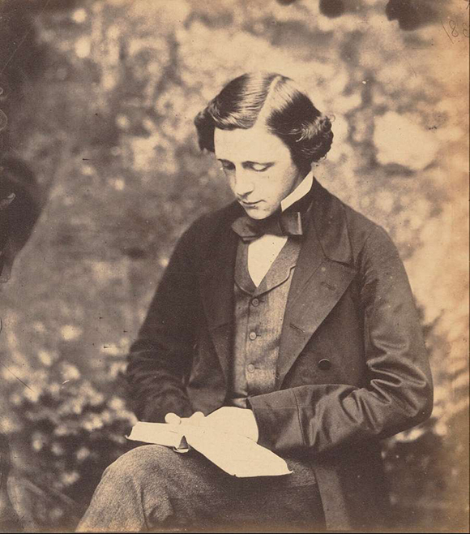

Lewis Carroll

Lewis Carroll was the pen name of Charles Lutwidge Dodgson, a renowned English writer, mathematician, logician, and photographer. He was born on January 27, 1832, in Daresbury, Cheshire, England, and passed away on January 14, 1898, in Guildford, Surrey, England. Carroll is best known for his imaginative literary works, particularly "Alice's Adventures in Wonderland" and its sequel, "Through the Looking-Glass."
Dodgson was the eldest son in a family of eleven children. He displayed an early aptitude for mathematics and showed great promise in the subject. In 1851, he enrolled at Oxford University's Christ Church, where he eventually became a mathematical lecturer and remained closely associated with the institution for the rest of his life.
It was during Dodgson's time at Oxford that he began developing the stories that would later become "Alice's Adventures in Wonderland." In 1862, while on a boating trip with the Liddell family, Dodgson told a tale to entertain the children, including Alice Liddell. Encouraged by the positive reception, he later expanded the story into a manuscript, and it was published in 1865 under the pseudonym Lewis Carroll. The book's whimsical characters, imaginative plot, and clever wordplay made it an instant success and a beloved classic of children's literature.
Following the success of "Alice's Adventures in Wonderland," Carroll published "Through the Looking-Glass" in 1871, which continued the fantastical adventures of Alice. Both books garnered critical acclaim and have since become enduring classics, celebrated for their blend of fantasy, satire, and linguistic playfulness.
In addition to his literary pursuits, Carroll was also an accomplished mathematician and logician. He wrote several books on mathematics, including "The Game of Logic" and "Symbolic Logic," which showcased his logical and analytical abilities. Carroll's interest in logic and puzzles is evident in his literary works, where he employed riddles, paradoxes, and absurd situations.
Apart from writing and mathematics, Carroll had a passion for photography. He was an early adopter of the medium and became skilled in the art. Carroll photographed a wide range of subjects, including children, famous personalities, and landscapes. His photographic work remains influential, particularly his portraits of children.
Lewis Carroll's life was marked by his imaginative and creative endeavors. While his literary works brought him widespread fame, he remained a private and somewhat enigmatic figure. Carroll's contributions to children's literature, mathematics, and photography continue to be celebrated, and his works have left an indelible mark on the world of imagination and whimsy.